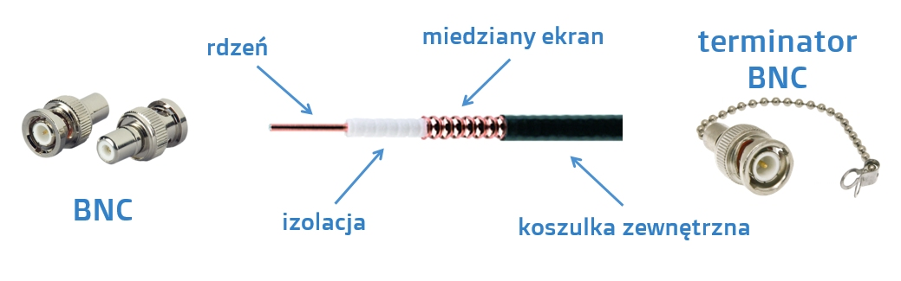

Medium - inaczej nośnik, jest to element sieci, poprzez który urządzenia komunikują się ze sobą i wymieniają dane. Medium takim może być kabel miedziany, światłowodowy, jak również fale radiowe (Wi-Fi). Możliwości transmisji zależą od parametrów użytego medium. Wyróżnia się media przewodowe i bezprzewodowe.
Media transmisyjne możemy podzielić również ze względu na rodzaj transmisji, jaki można w nich stosować: Simpleks – transmisja tylko w jednym kierunku Półdupleks – transmisja w obu kierunkach, ale nierównoczesna Dupleks – równoczesna transmisja w obu kierunkach
Budowa :
Zakończony jest złączem zwanym BNC. Czasami spotkamy też na zakończeniu kabla koncentrycznego, tak zwany terminator BNC, którego zadaniem jest eliminowanie odbicia sygnału przesyłanego przez kabel
Wyróżniamy dwa typy kabla koncentrycznego: kabel koncentryczny cienki oraz kabel koncentryczny gruby. Różnice jakie występują w oby tych odmianach są następujące:
| Rodzaj | Grubość | max długość | standard sieci | max przepustowość |
| cienki | 5mm | 185 metrów | 10 base-2 | 10mb/s |
| gruby | 10mm | 500 metrów | 10 base-2 | 10mb/s |
Zupełnie innym od omówionych wcześniej mediów transmisyjnych jest kabel światłowodowy, innym ze względu na materiał wykorzystywany do budowy rdzenia. W przypadku kabla koncentrycznego i skrętki rdzeń czy też żyły są miedziane, natomiast w przypadku kabli światłowodowych mamy do czynienia z włóknem szklanym. Wykorzystanie włókna szklanego jako budulca rdzenia wymusza również zastosowanie innego rodzaju sygnału przesyłowego. W przypadku mediów miedzianych był to prąd elektryczny, a w przypadku światłowodów jest to promień świetlny, a najczęściej wykorzystywany rodzaj to światło podczerwone.